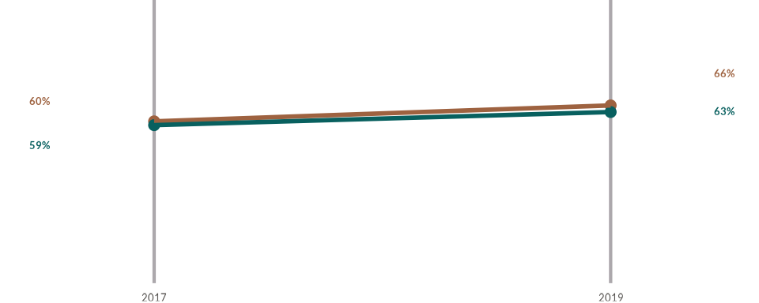
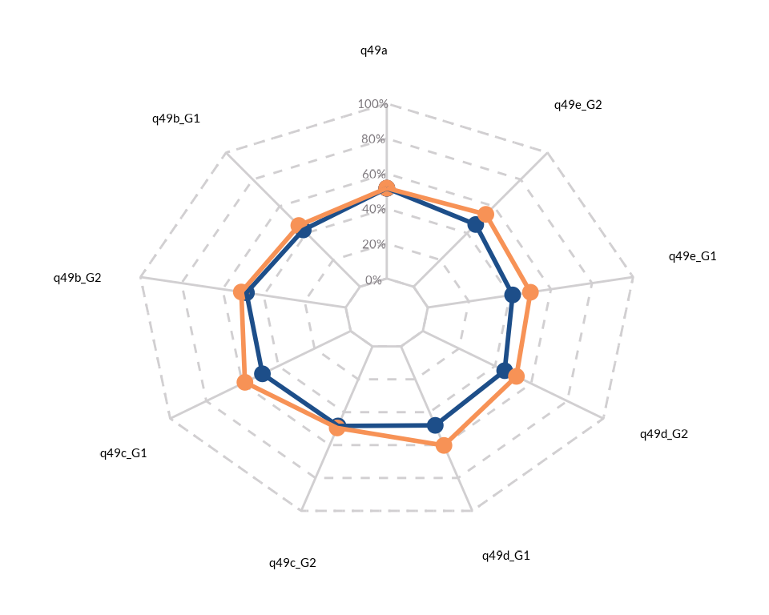

This vignette demonstrates how to use the data visualization
functions included in the WJPr package with a fictional
dataset called GPP, which is bundled with the package.
Version 1.0.0 of WJPr comes with ten plotting functions,
enabling the creation of the following chart types:
- Bar (Horizontal/Vertical/Stacked)
- Diverging Bars
- Lines
- Slopes
- Dots (with error bars)
- Dumbbells
- Radar
- Rose
- Edgebars
- Gauge
library(ggplot2)
#> Error in get(paste0(generic, ".", class), envir = get_method_env()) :
#> object 'type_sum.accel' not found
library(dplyr)
library(tidyr)
library(haven)
library(kableExtra)
library(WJPr)
# Always load the WJP fonts if not passing a custom theme to function
wjp_fonts()
# Loading data
gpp_data <- WJPr::gppBar Chart
Preparing the data
To begin, we will plot a simple vertical bar chart. For the
GPP dataset, a common use case involves visualizing the
percentage of responses across different groups of respondents. In this
example, we will plot the percentage of respondents in each country who
have “a lot” or “some” trust in Institution A. This is calculated as the
percentage of people who answered 1 or 2 to question Q1A. The first step
is to wrangle the data accordingly:
data4bars <- gpp_data %>%
select(country, year, q1a) %>%
group_by(country, year) %>%
mutate(
q1a = as.double(q1a),
trust = case_when(
q1a <= 2 ~ 1,
q1a <= 4 ~ 0,
q1a == 99 ~ NA_real_
),
year = as.character(year)
) %>%
summarise(
trust = mean(trust, na.rm = TRUE),
.groups = "keep"
) %>%
mutate(
trust = trust*100
) %>%
filter(year == "2022")
kbl(data4bars)| country | year | trust |
|---|---|---|
| Atlantis | 2022 | 49.09091 |
| Narnia | 2022 | 45.65217 |
| Neverland | 2022 | 63.63636 |
Simple vertical chart
Once the data is prepared, we can create a basic vertical bar chart
using the wjp_bars() function. You only need to specify the
names of the columns that contain the values to be plotted on the Y-axis
(target) and the categories to be displayed on the X-axis
(grouping).
wjp_bars(
data4bars,
target = "trust",
grouping = "country"
)
Controlling color
Colors can be customized using the colors and
cvec parameters. The colors parameter
specifies the column used to distinguish color groups, while
cvec is a named vector that maps specific values to
specific colors. For example, to give all bars a consistent cool gray
color, we can use the “year” column for colors and map the
year “2002” to the color code “#8789C0”.
wjp_bars(
data4bars,
target = "trust",
grouping = "country",
colors = "year",
cvec = c("2022" = "#8789C0")
)If you prefer to assign a unique color to each country, you’ll need
to create a new column because the grouping parameter is
already using the “country” column. In the example below, we create a
new column called “color_variable” with the same values as the “country”
column:
Adding value labels
To add value labels to the bars, use the labels and
lab_pos parameters. The labels parameter
specifies the column containing the label values, while
lab_pos determines the position of the labels. Since the
target column may contain values with many decimals, it’s
common to create a separate column for rounded labels. In this example,
we create two new columns, value_label and
label_position, placing the labels 5 percentage points
above the tops of the bars:
data4bars <- data4bars %>%
mutate(
value_label = paste0(
format(
round(trust, 0),
nsmall = 0
),
"%"
),
label_position = trust + 5
)
wjp_bars(
data4bars,
target = "trust",
grouping = "country",
labels = "value_label",
lab_pos = "label_position",
colors = "color_variable",
cvec = c("Atlantis" = "#2E4057",
"Narnia" = "#083D77",
"Neverland" = "#F4D35E")
)
Stacked Bars Chart
The wjp_bars() function can also be used to create
stacked bar charts. For instance, instead of plotting the percentage of
respondents who have “a lot” or “some” trust in Institution A, we can
visualize the percentage distribution for all possible responses in each
country. First, we modify the data to reflect this new design:
data4bars <- gpp_data %>%
filter(
year == 2022
) %>%
select(country, q1a) %>%
mutate(
q1a = case_when(
q1a == 1 ~ "A lot",
q1a == 2 ~ "Some",
q1a == 3 ~ "Little",
q1a == 4 ~ "None",
q1a == 99 ~ "No answer",
),
q1a = factor(
q1a,
levels = c("A lot", "Some", "Little", "None", "No answer")
)
) %>%
group_by(country, q1a) %>%
count() %>%
group_by(country) %>%
arrange(country, desc(q1a)) %>%
mutate(
total = sum(n),
percentage = (n/total)*100,
value_label = paste0(
format(
round(percentage, 1),
nsmall = 1
),
"%"
),
value_label = if_else(percentage >= 5, value_label, NA_character_),
label_position = cumsum(percentage)-(percentage/2)
) %>%
select(
country, q1a, percentage, value_label, label_position
)
kbl(data4bars)| country | q1a | percentage | value_label | label_position |
|---|---|---|---|---|
| Atlantis | No answer | 3.508772 | NA | 1.7543860 |
| Atlantis | None | 14.035088 | 14.0% | 10.5263158 |
| Atlantis | Little | 35.087719 | 35.1% | 35.0877193 |
| Atlantis | Some | 28.070175 | 28.1% | 66.6666667 |
| Atlantis | A lot | 19.298246 | 19.3% | 90.3508772 |
| Narnia | None | 19.565217 | 19.6% | 9.7826087 |
| Narnia | Little | 34.782609 | 34.8% | 36.9565217 |
| Narnia | Some | 28.260870 | 28.3% | 68.4782609 |
| Narnia | A lot | 17.391304 | 17.4% | 91.3043478 |
| Neverland | No answer | 1.785714 | NA | 0.8928571 |
| Neverland | None | 12.500000 | 12.5% | 8.0357143 |
| Neverland | Little | 23.214286 | 23.2% | 25.8928571 |
| Neverland | Some | 42.857143 | 42.9% | 58.9285714 |
| Neverland | A lot | 19.642857 | 19.6% | 90.1785714 |
Notice that we transform the q1a column into a factor variable and define the specific levels (order) of responses. Specifying factor levels allows us to control how the answers are displayed in the chart. If we don’t define the factor levels, the responses will default to alphabetical order, which may not align with the intended order of this ordinal variable.
Once the data is ready, we can use the wjp_bars()
function again, this time setting the stacked parameter to
“TRUE”:
stacked_bar <- wjp_bars(
data4bars,
target = "percentage",
grouping = "country",
labels = "value_label",
lab_pos = "label_position",
colors = "q1a",
cvec = c("A lot" = "#32382E",
"Some" = "#899878",
"Little" = "#E4E6C3",
"None" = "#BF4342",
"No answer" = "#858585"),
direction = "horizontal",
stacked = TRUE
)
stacked_bar
Diverging Bars Chart
Diverging bar charts are a variation of standard bar charts that use both the positive and negative sides of the Cartesian plane to display information. For example, let’s revisit our earlier case where we plotted levels of trust in Institution A. With diverging bars, we can plot the percentage of respondents who answered “A lot” and “Some” on one side, and the percentage of respondents who answered “Little” and “None” on the other. To achieve this, we first need to wrangle the data slightly differently:
data4divbars <- gpp_data %>%
filter(
year == 2022
) %>%
select(country, q1a) %>%
mutate(
q1a = case_when(
q1a <= 2 ~ "Trust",
q1a <= 4 ~ "No Trust"
)
) %>%
group_by(country, q1a) %>%
count() %>%
filter(
!is.na(q1a)
) %>%
group_by(country) %>%
mutate(
total = sum(n),
percentage = (n/total)*100,
value_label = paste0(
format(
round(percentage, 1),
nsmall = 1
),
"%"
),
value_label = if_else(percentage >= 5,
value_label,
NA_character_),
direction = if_else(q1a == "Trust",
"positive",
"negative"),
percentage = if_else(direction == "negative",
percentage*-1,
percentage),
label_position = (percentage/2)
) %>%
select(
country, q1a, percentage, value_label, label_position, direction
)
kbl(data4divbars)| country | q1a | percentage | value_label | label_position | direction |
|---|---|---|---|---|---|
| Atlantis | No Trust | -50.90909 | 50.9% | -25.45455 | negative |
| Atlantis | Trust | 49.09091 | 49.1% | 24.54545 | positive |
| Narnia | No Trust | -54.34783 | 54.3% | -27.17391 | negative |
| Narnia | Trust | 45.65217 | 45.7% | 22.82609 | positive |
| Neverland | No Trust | -36.36364 | 36.4% | -18.18182 | negative |
| Neverland | Trust | 63.63636 | 63.6% | 31.81818 | positive |
Diverging bar charts are a variation of standard bar charts that use both the positive and negative sides of the Cartesian plane to display information. For example, let’s revisit our earlier case where we plotted levels of trust in Institution A. With diverging bars, we can plot the percentage of respondents who answered “A lot” and “Some” on one side, and the percentage of respondents who answered “Little” and “None” on the other. To achieve this, we first need to wrangle the data slightly differently:
Pay close attention to how we create a new variable,
direction, to specify the direction in which the values
should be plotted. Values associated with a “negative” direction are
converted into negative numbers.
Once the data is prepared, we can use the wjp_divbars()
function to create the chart. Several parameters are used in the same
way as in the wjp_bars() function:
-
target: Specifies the column containing the values to be plotted. -
grouping: Specifies the column containing the categorical groupings. -
cvec: Contains a named vector that links specific values to color codes. -
labels: Specifies the column containing the value labels to display (optional).
In addition to these familiar parameters, the
wjp_divbars() function has two unique parameters essential
for diverging bar charts:
-
diverging: Specifies the column name that identifies the direction of the values (positive or negative). -
negative: Specifies the value in the diverging column that indicates negative values.
By combining these parameters, the wjp_divbars()
function allows for clear and effective visualization of contrasting
groups within the data.
wjp_divbars(
data4divbars,
target = "percentage",
grouping = "country",
diverging = "q1a",
negative = "negative",
cvec = c("Trust" = "#4F518C",
"No Trust" = "#2C2A4A"),
labels = "value_label"
)
Line Chart
Line charts are a great way to display the evolution of values over
time. The wjp_lines() function allows you to create line
charts with ease. Let’s assume we want to examine the percentage of
people who have “a lot” or “some” trust in Institution A in Atlantis
over time. To begin, we need to wrangle the data to match this
design:
data4lines <- gpp_data %>%
filter(
country == "Atlantis"
) %>%
select(year, q1a, q1b, q1c) %>%
mutate(
across(
!year,
\(x) as.double(x)
),
across(
!year,
~case_when(
.x <= 2 ~ 1,
.x <= 4 ~ 0,
.x == 99 ~ NA_real_
)
),
year = as.character(year)
) %>%
group_by(year) %>%
summarise(
across(
everything(),
\(x) mean(x, na.rm = TRUE)
),
.groups = "keep"
) %>%
mutate(
across(
everything(),
\(x) x*100
)
) %>%
pivot_longer(
!year,
names_to = "variable",
values_to = "percentage"
) %>%
mutate(
institution = case_when(
variable == "q1a" ~ "Institution A",
variable == "q1b" ~ "Institution B",
variable == "q1c" ~ "Institution C"
),
value_label = paste0(
format(
round(percentage, 0),
nsmall = 0
),
"%"
)
)
kbl(data4lines)| year | variable | percentage | institution | value_label |
|---|---|---|---|---|
| 2017 | q1a | 62.39316 | Institution A | 62% |
| 2017 | q1b | 43.85965 | Institution B | 44% |
| 2017 | q1c | 40.00000 | Institution C | 40% |
| 2019 | q1a | 63.51351 | Institution A | 64% |
| 2019 | q1b | 42.46575 | Institution B | 42% |
| 2019 | q1c | 44.44444 | Institution C | 44% |
| 2022 | q1a | 49.09091 | Institution A | 49% |
| 2022 | q1b | 32.14286 | Institution B | 32% |
| 2022 | q1c | 35.71429 | Institution C | 36% |
Note that we are also retaining data on trust in Institution B and
Institution C, and we are pivoting the dataset to a long format.
However, for simplicity, we will start by plotting only the percentage
of people who trust Institution A over time. We can achieve this with
the wjp_lines() function. Many of the parameters work
similarly to those in other functions:
-
target: Specifies the column containing the values to be plotted on the Y-axis. -
grouping: Specifies the column containing the categorical groupings. For most line charts, this is the year or time variable. -
colors: Specifies the column used to distinguish different colors for the lines. -
cvec: Contains a named vector mapping specific values to their corresponding color codes. -
labels: Specifies the column containing value labels to display, if any.
Additionally, the wjp_lines() function requires the
ngroups parameter to define the number of groups. Here’s how to set
it:
- For a single line: If plotting only one line, as in the example below, set ngroups = 1.
wjp_lines(
data4lines %>% filter(institution == "Institution A"),
target = "percentage",
grouping = "year",
ngroups = 1,
colors = "institution",
cvec = c("Institution A" = "#08605F"),
labels = "value_label"
)
- For multiple lines: When plotting multiple lines, specify the column containing the group identifiers. In this case, also consider setting repel = TRUE to prevent overlapping value labels. Note that the ggrepel package must be loaded for this feature to work.
library(ggrepel)
wjp_lines(
data4lines,
target = "percentage",
grouping = "year",
ngroups = data4lines$institution,
colors = "institution",
cvec = c("Institution A" = "#08605F",
"Institution B" = "#9E6240",
"Institution C" = "#2E0E02"),
labels = "value_label",
repel = TRUE
)
Controlling opacities
The wjp_lines() function includes a special feature that
allows you to highlight specific lines by adjusting their opacity. For
instance, if you want to highlight the line representing trust levels in
Institution A, start by setting transparency = TRUE. Then,
use the transparencies parameter to pass a named vector
specifying the opacity levels for each line. Ensure the named vector
uses the same values as the color vector (cvec) to align
opacities with the corresponding lines.
wjp_lines(
data4lines,
target = "percentage",
grouping = "year",
ngroups = data4lines$institution,
colors = "institution",
cvec = c("Institution A" = "#08605F",
"Institution B" = "#9E6240",
"Institution C" = "#2E0E02"),
labels = "value_label",
repel = TRUE,
transparency = TRUE,
transparencies = c("Institution A" = 1.00,
"Institution B" = 0.25,
"Institution C" = 0.25)
)Slope Chart
Slope charts are a great choice for visualizing the evolution of
variables between two specific points in time. They provide a more
aesthetically pleasing alternative to line charts in such cases. The
wjp_slope() function is designed for this purpose.
Let’s use an example where we disaggregate the evolution of trust in Institution A between 2017 and 2022 across three countries. We begin by preparing the data to fit this design:
data4slopes <- gpp_data %>%
select(year, gend, q1a) %>%
filter(
year %in% c(2017, 2019)
) %>%
mutate(
q1a = as.double(q1a),
trust = case_when(
q1a <= 2 ~ 1,
q1a <= 4 ~ 0
),
gender = case_when(
gend == 1 ~ "Male",
gend == 2 ~ "Female"
)
) %>%
group_by(year, gender) %>%
summarise(
trust = mean(trust, na.rm = T)*100,
.groups = "keep"
) %>%
mutate(
value_label = paste0(
format(
round(trust, 0),
nsmall = 0
),
"%"
)
)
kbl(data4slopes)| year | gender | trust | value_label |
|---|---|---|---|
| 2017 | Female | 60.00000 | 60% |
| 2017 | Male | 58.59873 | 59% |
| 2019 | Female | 65.90909 | 66% |
| 2019 | Male | 63.46154 | 63% |
Once the data is ready, we can use the wjp_slope() function. This function relies on parameters that have been covered in previous examples:
-
target: Specifies the column containing the values to be plotted on the Y-axis. -
grouping: Specifies the column containing the categorical groupings. For slope charts, this usually refers to the time variable or year. -
colors: Specifies the column used to distinguish different colors in the slope chart. -
cvec: Contains a named vector mapping specific values to their corresponding color codes. -
labels: Specifies the column containing value labels to display, if any. -
ngroups: Defines the number of lines to be plotted. For a single line, setngroups = 1. For multiple lines, pass the column containing the group identifiers. -
repel: Activates theggrepelfeature to prevent overlapping labels. Note that theggrepelpackage must be loaded for this feature to work.
Using these parameters, you can create a slope chart that effectively highlights changes between two points in time while maintaining clarity and visual appeal.
wjp_slope(
data4slopes,
target = "trust",
grouping = "year",
ngroups = data4slopes$gender,
labels = "value_label",
colors = "gender",
cvec = c("Male" = "#08605F",
"Female" = "#9E6240"),
repel = TRUE
)
Dots Chart
Minimal Example
Dot charts are an excellent option for displaying multiple variables
and comparing results across different agents, regions, or categories.
The wjp_dots() function allows you to create dot charts
efficiently and effectively.
Let’s walk through an example where we plot the percentage of people who have “a lot” or “some” trust in Institutions A, B, C, and D across three countries: Atlantis, Narnia, and Neverland. To start, we need to prepare our data for this minimal example as follows:
data4dots <- gpp_data %>%
select(country, q1a, q1b, q1c, q1d) %>%
mutate(
across(
!country,
\(x) case_when(
x <= 2 ~ 1,
x <= 4 ~ 0
)
)
) %>%
group_by(country) %>%
summarise(
across(
everything(),
\(x) mean(x, na.rm = T)*100
),
.groups = "keep"
) %>%
pivot_longer(
!country,
names_to = "variable",
values_to = "percentage"
) %>%
mutate(
institution = case_when(
variable == "q1a" ~ "Institution A",
variable == "q1b" ~ "Institution B",
variable == "q1c" ~ "Institution C",
variable == "q1d" ~ "Institution D",
)
)
kbl(data4dots)| country | variable | percentage | institution |
|---|---|---|---|
| Atlantis | q1a | 59.75610 | Institution A |
| Atlantis | q1b | 40.74074 | Institution B |
| Atlantis | q1c | 40.33613 | Institution C |
| Atlantis | q1d | 52.65306 | Institution D |
| Narnia | q1a | 60.88710 | Institution A |
| Narnia | q1b | 41.86992 | Institution B |
| Narnia | q1c | 41.80328 | Institution C |
| Narnia | q1d | 49.20000 | Institution D |
| Neverland | q1a | 58.77551 | Institution A |
| Neverland | q1b | 40.57377 | Institution B |
| Neverland | q1c | 39.34426 | Institution C |
| Neverland | q1d | 44.39834 | Institution D |
Once the data is prepared, we can use the wjp_dots()
function to create the dot chart. The required parameters for this
function are consistent with those explained in earlier sections:
-
target: The column name containing the values to be plotted as dots. -
grouping: The column name containing the categorical groupings (e.g., institutions or categories being compared). -
colors: The column name used to assign different colors to the dots. -
cvec: A named vector linking specific values to their corresponding color codes.
Controlling opacities and shapes
A special feature of the wjp_dots() is that it allows
you to apply a special highlight to certain data points through the
manipulation of shapes and opacities. For this, we begin by setting the
diffOpac and the diffShp parameters to TRUE.
Then, we proceed to pass a named vector with the specific values of
opacities and the desired symbol codes. The control of these traits
works on the same values passed as through the colors and
cvec parameters. To check the symbol codes used in ggplot,
you can read the ggplot2
documentation.
wjp_dots(
data4dots,
target = "percentage",
grouping = "institution",
colors = "country",
cvec = c("Atlantis" = "#08605F",
"Narnia" = "#9E6240",
"Neverland" = "#2E0E02"),
diffOpac = TRUE,
opacities = c("Atlantis" = 0.3,
"Narnia" = 1.0,
"Neverland" = 0.3),
diffShp = TRUE,
shapes = c("Atlantis" = 15,
"Narnia" = 21,
"Neverland" = 15)
)
Adding confidence intervals
The wjp_dots() function has a special feature that
allows us to add confidence intervals to the plotted data points. This
comes very handy when we want to visualize if two data points are
statistically different from each other. Let’s assume that we want to
know if the trust levels in Institution A, B, C, and D, are
statistically different between males and females in our sample. For
this, we first need to plot our data a little bit different given that,
besides the data point (mean), we will also require the standard
deviation and the sample size for each group and variable.
data4dots_errorbars <- gpp_data %>%
select(gend, q1a, q1b, q1c, q1d) %>%
mutate(
gend = case_when(
gend == 1 ~ "Male",
gend == 2 ~ "Female",
),
across(
!gend,
\(x) case_when(
x <= 2 ~ 1,
x <= 4 ~ 0
)
)
) %>%
group_by(gend) %>%
summarise(
across(
c(q1a, q1b, q1c, q1d),
\(x) mean(x, na.rm = T)*100,
.names = "{col}_mean"
),
across(
c(q1a, q1b, q1c, q1d),
\(x) sum(!is.na(x)),
.names = "{col}_n"
),
across(
c(q1a, q1b, q1c, q1d),
\(x) sd(x, na.rm = T)*100,
.names = "{col}_sd"
),
.groups = "keep"
) %>%
pivot_longer(
!gend,
names_to = c("variable", "stat"),
names_pattern = "(.*)_(.*)",
values_to = "value"
) %>%
pivot_wider(
names_from = "stat",
values_from = "value"
) %>%
mutate(
institution = case_when(
variable == "q1a" ~ "Institution A",
variable == "q1b" ~ "Institution B",
variable == "q1c" ~ "Institution C",
variable == "q1d" ~ "Institution D",
)
)
kbl(data4dots_errorbars)| gend | variable | mean | n | sd | institution |
|---|---|---|---|---|---|
| Female | q1a | 59.90099 | 404 | 49.07067 | Institution A |
| Female | q1b | 40.60150 | 399 | 49.17039 | Institution B |
| Female | q1c | 43.35840 | 399 | 49.61915 | Institution C |
| Female | q1d | 50.86849 | 403 | 50.05460 | Institution D |
| Male | q1a | 59.70149 | 335 | 49.12315 | Institution A |
| Male | q1b | 41.61677 | 334 | 49.36616 | Institution B |
| Male | q1c | 37.00306 | 327 | 48.35525 | Institution C |
| Male | q1d | 46.24625 | 333 | 49.93393 | Institution D |
Once that we have the data ready. We make use of the
wjp_dots() function and we set draw_ci = TRUE
inside the function call. Additionally, we also need to specify the
sd and sample_size parameters, which are the
column names that contain the standard deviation and the sample size for
each variable and group.
wjp_dots(
data4dots_errorbars,
target = "mean",
grouping = "institution",
colors = "gend",
cvec = c("Male" = "#08605F",
"Female" = "#9E6240"),
draw_ci = TRUE,
sd = "sd",
sample_size = "n"
)
Dumbbells
Dumbbells are a good option when we want to focus on two different
points in time for multiple variables. The wjp_dumbbells
function is used to plot dumbbells for this purpose. We can use the data
that we used for plotting our line chart above and just filtering for
two points in time. Once we have the data we can apply the
wjp_dumbbells() function as usual with the parameters that
we have reviewed in previous sections:
data4dumbbells <- data4lines %>%
filter(year %in% c("2017", "2022"))
wjp_dumbbells(
data = data4dumbbells,
target = "percentage",
grouping = "institution",
color = "year",
cvec = c("2017" = "#08605F",
"2022" = "#9E6240"),
cgroups = c("2017", "2022")
)Adding value labels to a dumbbell chart is as easy as specifying the
column names that have the value label (labels) and the
label position (labpos) to the plotting function.
data4dumbbells <- data4dumbbells %>%
mutate(
lab_position = if_else(year == "2022", percentage-5, percentage+5)
)
wjp_dumbbells(
data = data4dumbbells,
target = "percentage",
grouping = "institution",
color = "year",
cgroups = c("2017", "2022"),
cvec = c("2017" = "#08605F",
"2022" = "#9E6240"),
labels = "value_label",
labpos = "lab_position"
)
Controlling the order of elements
Sometimes, we might want to control the order in which we show some
elements in our charts. Some of the plotting functions in our WJPr
package include the a custom_order and an
order parameter. Let’s say that we want to further
customize the diverging bars that we showed above and present the bars
following in a specific order: Neverland (1), Atlantis (2), and Narnia
(3). For this, we begin by setting the custom_order to TRUE
and adding a new column to our data that has the specific order of the
elements:
data4divbars <- data4divbars %>%
mutate(
order_no = case_when(
country == "Neverland" ~ 1,
country == "Atlantis" ~ 2,
country == "Narnia" ~ 3
)
)
wjp_divbars(
data4divbars,
target = "percentage",
grouping = "country",
diverging = "q1a",
negative = "negative",
cvec = c("Trust" = "#4F518C",
"No Trust" = "#2C2A4A"),
labels = "value_label",
custom_order = TRUE,
order = "order_no"
)Same can be done when working with dot charts:
data4dots <- data4dots %>%
mutate(
order_no = case_when(
variable == "q1c" ~ 1,
variable == "q1b" ~ 2,
variable == "q1d" ~ 3,
variable == "q1a" ~ 4
)
)
wjp_dots(
data4dots,
target = "percentage",
grouping = "institution",
colors = "country",
cvec = c("Atlantis" = "#08605F",
"Narnia" = "#9E6240",
"Neverland" = "#2E0E02"),
order = "order_no"
)
Adding more customizations
All the plotting functions from the WJPr package return a ggplot
object. This means that, with a further knowledge of ggplot, the user
can further customize the plot returned by the plotting function. For
example, let’s say that we want to further customize our stacked bars
from before and completely remove the panel grid and add some title and
subtitle to it. We can do it by using the labs() and
theme() functions from the ggplot2 package as shown
bellow:
stacked_bar +
labs(
title = "Trust in Institution A",
subtitle = "Percentage of people who has a lot, some, little, or no trust in Institution A"
) +
theme(
axis.text.x = element_blank(),
panel.grid.major.x = element_blank(),
plot.title.position = "plot",
plot.subtitle = element_text(face = "italic")
)